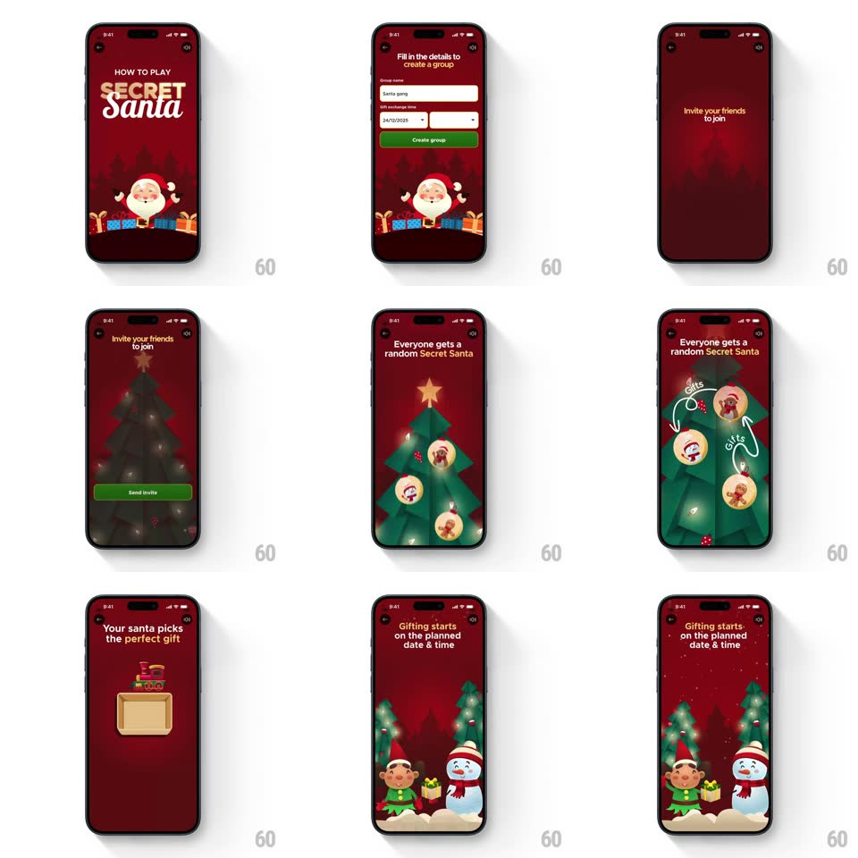

Media
Frame-by-frame

Rebuild this animation 1:1: Blinkit's Secret Santa "How to play" flow - a sequence of dark-red Christmas screens, each explaining one step with a vector illustration, transitioning playfully from step to step.

Rebuild this animation 1:1: Blinkit's Secret Santa "How to play" flow - a sequence of dark-red Christmas screens, each explaining one step with a vector illustration, transitioning playfully from step to step. ## Integration A swipeable/auto-advancing step carousel of full-screen illustration pages; each page animates its illustration on entry. ## Scene - Palette: dark red background (Blinkit Christmas red), white text, yellow accents. - Header: "How to play SECRET Santa" with a cartoon Santa illustration. - Step 1: "Fill in the details to create a group" - form field illustration; on completion a "Group created successfully!" confirmation appears. - Step 2: "Invite your friends to join" - an envelope with "JOIN MY GROUP" on the letter and a Send invite button. - Step 3: "Everyone gets a random Secret Santa" - a Christmas tree decorated with avatar baubles (circular user photos as ornaments). - Step 4: "Your santa picks the perfect gift" - a gift box illustration that opens. - Step 5: "Gifting starts on the planned date & time" - an elf and a snowman standing in falling snow. ## Motion spec Pattern: step-by-step animated how-to with vector illustrations and mascot transitions. - Page transitions: horizontal slide, ~350ms, ease-out; the incoming page slides in from the right while the outgoing page slides left. - Per-step illustration entrance: elements pop in with a spring scale (0.8 → 1.0, ~400ms, slight overshoot) in reading order, staggered 80ms. - Step 1: the "Group created successfully!" confirmation scales in after the form illustration settles. - Step 3: avatar baubles drop onto the tree one by one with a small bounce. - Step 4: the gift lid lifts and tilts open (~30deg) with a spring. - Step 5: snow particles fall continuously across the screen (~20 flakes, randomized 30-60 px/s fall speeds, slight horizontal drift). ## Calibration - Page transition: 350ms ease-out. - Illustration pop: 400ms spring, scale 0.8 → 1.0, stagger 80ms. - Snow: ~20 flakes, 30-60 px/s fall speed, looping. ## Reduced motion Steps crossfade (150ms) instead of sliding; illustrations appear without pop or bounce; snow static. ## Don't miss - The dark red Christmas palette carries through every step. - The baubles on the tree are circular user photos, not plain ornaments. - The gift box actually opens - the lid lifts, it's not a static illustration.